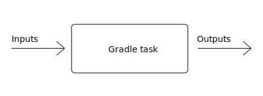

$> gradle --build-cache assemble
:compileJava FROM-CACHE
:processResources
:classes
:jar
:assemble
BUILD SUCCESSFULModerne Build Tools - Gradle
Stefan Wolf (@wolfs42), Gradle
Überblick über Gradle
Gradle
(management summary)
Software besser und schneller bauen, automatisieren und ausliefern
Cross-Plattform
Sprachagnostisch
Apache v2 Lizenz
Build Tool + Gradle Enterprise (On Premises + Cloud)
Daten
~30 Entwickler die Vollzeit an Gradle arbeiten
4.0 - 14. Juni 2017
4.8 - 4. Juni 2018
4.9 - 16 Juli 2018
Releasezyklus 6 Wochen.
3-5 Millionen Downloads pro Monat
Was ist Gradle Enterprise?
Gradle Enterprise ist eine Plattform komplementär zum Gradle Build Tool, dass Firmen hilft, Entwicklerproduktivität signifikant zu steigern.
Feature Sets

Entwicklerproduktivität
Einflüsse auf
Entwicklerproduktivität
IDE
Sprachen und Frameworks
Gute Hardware
Schulungen
Essen in der Kantine
Wieso ist das wichtig
Fallstudie:
$1.600.000 gespart pro Jahr
pro Minute schnellerer Build Zeit
für 600 Entwickler
Vier Säulen der
Entwicklerproduktivität
Schnelle Feedbackzyklen
Hohes Maß an Automation
Schnelles Debugging
Kultur der Produktivität
Schnelle Feedbackzyklen
Maximale Buildperformance
Messe und optimiere
Build-Zuverlässigkeit
Maximale Buildperformance
Maximale Buildperformance ist die maximal erreichbare Performance eines Buildsystems für Ihre Codebasis.
Testprojekte
Large monolithic: 1 Prj, 50000 Src
Small multiproject: 10 Prj, 100 Src/Prj
Medium multiproject: 100 Prj, 100 Src/Prj
Large multiproject: 500 Prj, 100 Src/Prj
Gradle ist bis zu 100 Mal schneller als Maven
Wie
Compile Avoidance
Inkrementelle Kompilierung
Build Cache
Gradle kann Ergebnisse
des letzten Mals
als dieser Build
auf diesem Computer
ausgeführt wurde wiederverwenden.

das geht noch besser
Wieso nicht…
von irgendwann
wenn irgendein Build
irgendwo ausgeführt wurde.

Build Cache
Was sind Build Scans?
Aufzeichnung was in einem Build passiert ist
Permanente und teilbare URLs
Für Entwickler und Build Master
Build Cache - Demo
Build Cache
Stabil für Java, Groovy und Scala Projekte
Performantes Backend von Gradle
Dockerhub:
hub.docker.com/r/gradle/build-cache-nodeIntegriert mit Gradle Enterprise
Messe und optimiere
Daten?
Zeiten aus CI Server
Entwicklerbuilds?
Lösung: Build Scans
Build-Zuverlässigkeit
Zuverlässige Parallelität
Cache ist treibende Kraft
Build Scans zum Debugging
Schnelles Debugging
Build Scans!
Nachverfolgbarkeit
Tags und Custom Values
Maven vs. Gradle
Performance
Flexibilität
C/C++
Android
Erweiterbares Modell
User Experience
Console
Completion
IDE support
Build scans
Dependency Management
API vs Implementation
Composite builds
Wirklich Abhängigkeiten managen
Dependency Management
open class CodeNarcRule : ComponentMetadataRule {
override fun execute(context) {
context.details.allVariants {
withDependencies {
removeAll {
it.group == "org.codehaus.groovy"
}
add("org.codehaus.groovy:groovy-all") {
version {
prefer("2.4.15")
}
because("We use groovy-all everywhere")
} } } } }Migration zu Gradle
gradle initBuild Scans zur Verifikation
Danke
Training: https://gradle.org/training
Gradle Guides: https://guides.gradle.org
Gradle Enterprise: https://gradle.com
Gradle Summit 2017 videos: Youtube